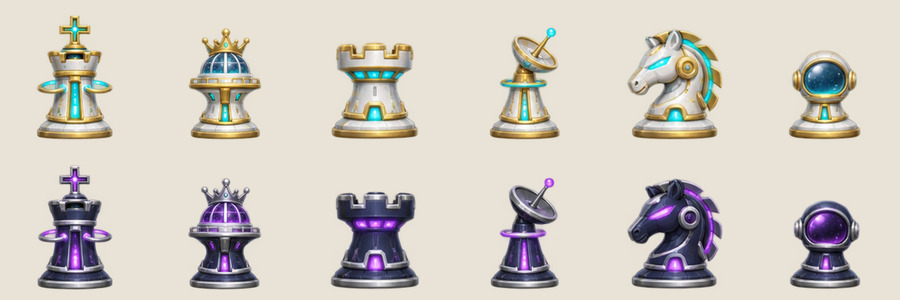
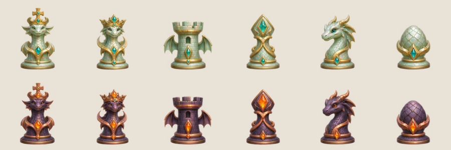
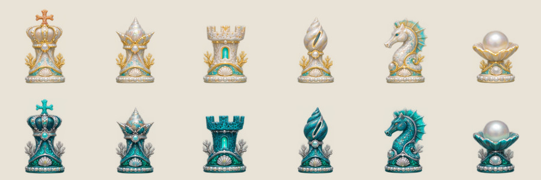
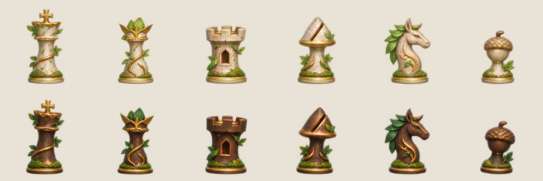
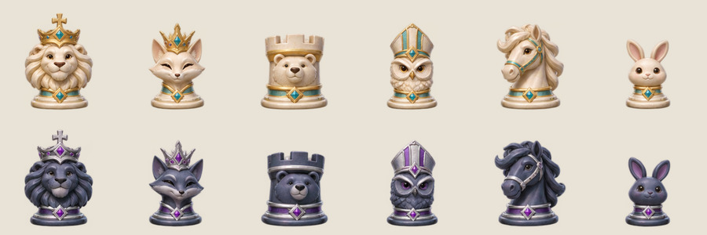
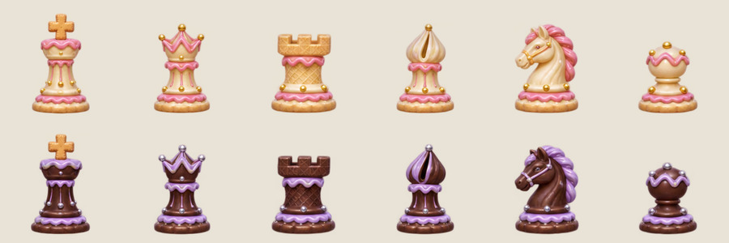
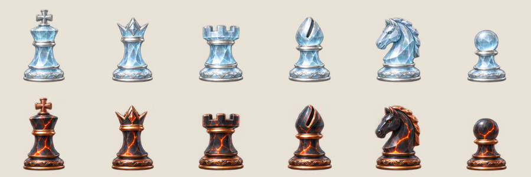
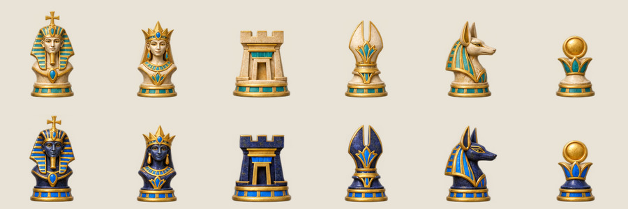
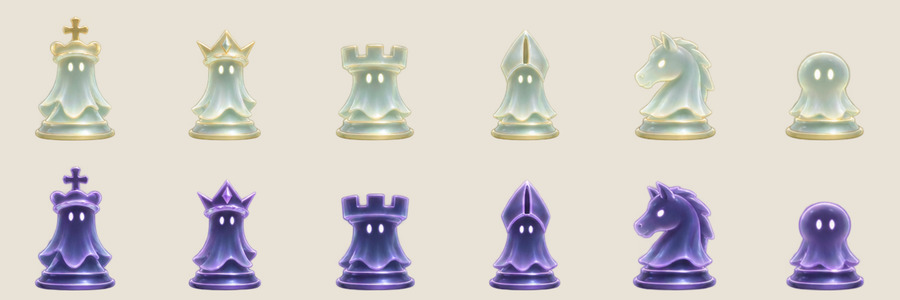
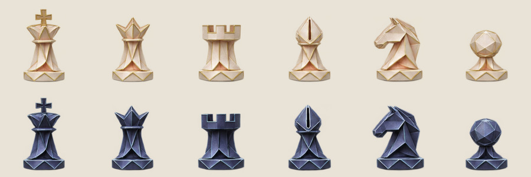

백·흑 12종 × 기본·공격·피격 3포즈 · 기본 스킨은 로열 클래식 · 모두 무료
🧸 그림체가 다른 귀여운 새 스킨 5종 보기
Space Explorers · 생성 프롬프트 · 36포즈 원본

Dragon Kingdom · 생성 프롬프트 · 36포즈 원본

Ocean Kingdom · 생성 프롬프트 · 36포즈 원본

Enchanted Forest · 생성 프롬프트 · 36포즈 원본

Animal Knights · 생성 프롬프트 · 36포즈 원본

Candy Kingdom · 생성 프롬프트 · 36포즈 원본

Ice and Ember · 생성 프롬프트 · 36포즈 원본

Ancient Egypt · 생성 프롬프트 · 36포즈 원본

Friendly Ghost Castle · 생성 프롬프트 · 36포즈 원본

Origami Kingdom · 생성 프롬프트 · 36포즈 원본
